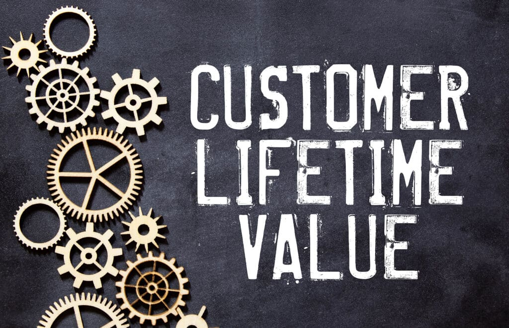

Data cleaning is a crucial aspect of any Data Science job, and this SQL project focused on honing those essential skills.
It was an advanced and exciting project where I explored and implemented various data-cleaning techniques.
For this project, I worked with a dataset on company layoffs, which I sourced from GitHub. I simplified and transformed the dataset by:
Removing duplicates and irrelevant columns. Standardizing data values ( trimming, formatting, and aligning inconsistencies).
Handling null values to ensure accuracy and completeness. Performing exploratory data analysis (EDA) to extract actionable insights.
The project involved writing complex SQL queries and utilizing statements and functions such as INSERT, ISNULL, WINDOW FUNCTION, CASE, ROW_NUMBER, PARTITION BY,
and Common Table Expressions (CTEs). This project enhanced my SQL proficiency and further cemented my understanding of best practices in data cleaning and analysis.
You can check out my SQL Data Cleaning project here:

In this SQL data analysis project, I was responsible for extracting and analyzing data to provide insights into a Lweis business performance over time.
The dataset, structured in a SQL file, contained information about products, orders, and sales transactions. I utilized SQL queries to extract and transform
the dataset to meet analysis requirements. Initially, I refined the dataset by filtering out irrelevant information for each analysis. Then, I employed conditional
logic to compute revenue, accounting for various discount scenarios and default prices. Furthermore, I used aggregation functions to calculate total revenue, and
order counts, and determine the average price. Finally, through sorting and filtering techniques, I identified the top-selling product and its corresponding category.
This SQL data analysis project yielded valuable insights into revenue generation, order volume, and product performance. These insights have the potential to enhance
strategic decision-making processes and optimize business operations, thereby contributing to increased profitability.

This data, I undertook the task of optimizing the donor engagement and donation rates for Education for All fundraising,
a non-profit committed to promoting education accessibility. My approach involved developing a comprehensive donor data, donation data and utilizing
SQL queries to extract valuable insights. This facilitated strategic decision-making by the fundraising team. Our efforts resulted in significant
improvements: a 20% increase in donor numbers, a 15% rise in donation frequency, and a 25% boost in average donation amounts. Moreover, targeted
segmentation led to a 30% surge in donations, with specific states identified as major contributors. This enabled focused fundraising efforts in these areas,
maximizing support for the organization's mission.

This project entailed an in-depth analysis of customer lifetime value segmentation at NexaSat, using SQL to derive actionable insights. Through this hands-on experience,
I identified up-selling and cross-selling opportunities in the telecom industry, leveraging data-driven strategies to maximize revenue potential and improve customer engagement.
My role was pivotal in employing advanced SQL techniques to analyze extensive customer data, significantly contributing to strategic decision-making processes at NexaSat.
Cybersecurity Risk Analysis

In this project i cleaned and analyzed report for LOCK CO. A dynamic mid-size technology company revolutionizing software development in IT faces a critical challenge:
securing its systems and data in an increasingly complex cyber threat landscape. This translates to several key obstacles.
Malicious actors are constantly trying to infiltrate systems and steal valuable data.
Client concerns about data security are growing.
Evolving regulations are imposing stricter data protection and cybersecurity compliance requirements.
Cyber threats can erode client trust and damage a company's reputation.
Potential cyberattacks can cripple operations.
Firstly I extracted the data to SQL where I cleaned the data, applied Some advance, CREATE TABLE for each dataset, JOIN statements, Numeric expressions to make the data more usable. Creat FUNCTIONS
You can also view the Detailed Document of the project